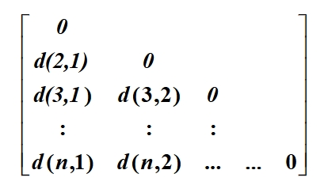
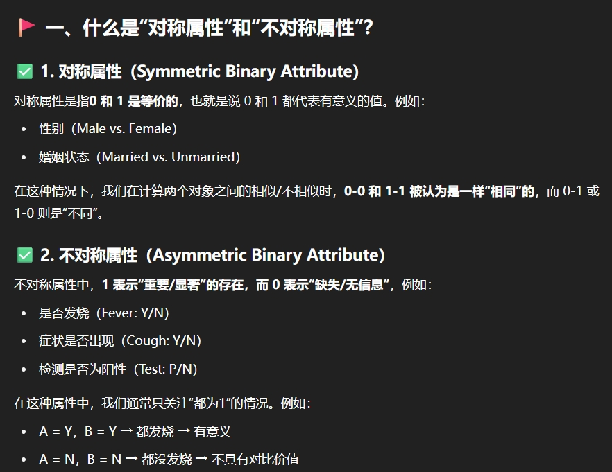
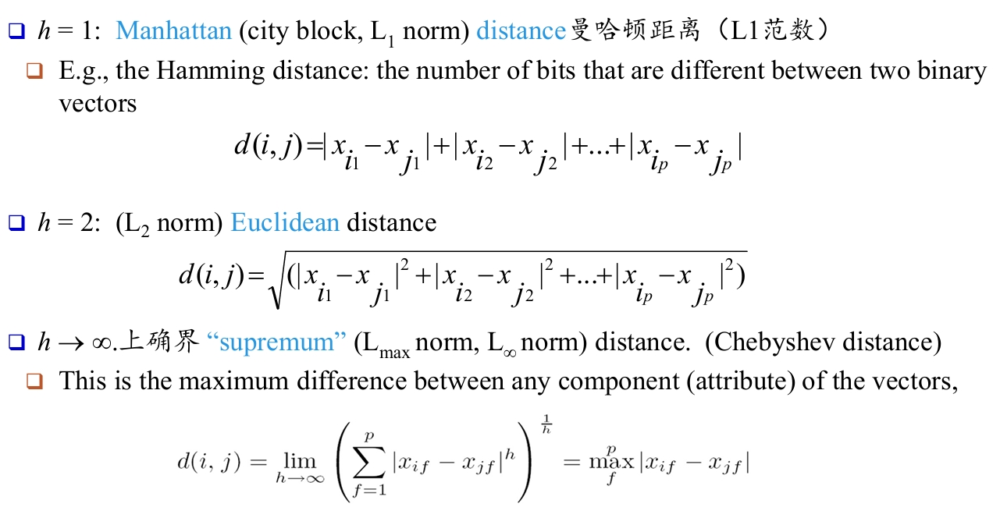

数据挖掘课程复习
用于HITSZ 25春数据挖掘复习
概述
数据挖掘的含义
数据挖掘是从海量数据集中发现有趣的（非平凡的、隐含的、未被发现但有用的）模式、模型或知识的过程。
数据挖掘过程
知识发现的过程：
1. 数据预处理
1. 数据清洗
2. 数据集成
3. 数据选择
4. 数据变换
2. 数据挖掘
3. 模式/模型评估
4. 知识表示
数据挖掘的应用
- 数据分析与决策支持
- 客户画像、需求分析
- 交叉市场分析
- 风险分析与管理
- 竞争分析
- 风险评估
- 资产管理
- 资源规划
- 欺诈检测与异常模式挖掘
- 医疗、电信等
数据仓库
定义：数据仓库是面向主题的、集成的、随时间变化的、又相对稳定的数据集合，它支持管理层的决策过程
数据仓库的关键特征：
- 面向主题的：
- 数据仓库的数据是以分析的主题为中心构建的
- 集成的：
- 数据仓库的数据来自不同的数据源，需要按照统一的结构、格式、度量、语义进行数据处理，最后集成到数据仓库的主题
- 随时间变化的：
- 数据仓库的历史数据，需要随时间延长而增加（周期性更新）
- 数据仓库的综合数据，需要随时间延长而变化
- 相对稳定的：
- 数据仓库的数据主要用于支持决策，不会涉及频繁的修改与变化，主要是查询与分析。
数据特征分析与预处理
数据类型及其特征
数据对象：
数据集由数据对象构成，数据对象又称之为样本、实例。
属性类型
定义：一个数据字段，表示一个数据对象的某个特征
分类：
标称属性: 与名称相关的值、分类或枚举属性 (定性的)
- 二元属性: 标称属性的一种特殊情况，只有2个状态的标称属性。
序数属性: 值有一个有意义的顺序 (定性的)
数值属性: 可度量的量 (定量的)
- 区间标度属性:
- 在统一度量的尺度下
- 值有序（e.g. 日历日期， 温度计数据）
- 没有固有0点
- 比率标度属性：
- 具有固有零点，可以说一个值是一个值得多少倍
- 举例：字数、体重、工作年限
- 区间标度属性:
数据的描述统计
- 数据离散特征： 均值、众数、最值、分位数、方差、离群点……
- 排序区间：
- 数据离散度： 多个粒度上得分析
- 排序区间得盆图/分位数图分析
描述统计的图形显示： 箱型图、直方图、分位数图、散点图
数据可视化方法
数据可视化方法得分类：
- 基于像素的可视化技术
- 协方差矩阵的热力图
- 基于几何投影的可视化技术
- 直接可视化、散点图、透视地形、平行坐标
- 基于图标的可视化技术
- 脸谱图、人物画像图
- 基于分层的可视化技术
- 树状图、锥形树
- 可视化复杂数据与关系
- 标签云、线形图、饼图、结构图/流程图、怪图、系统进化图
测量数据的相似性和相异性
- 相似性： 度量数据的相似程度，越大越相似，通常范围在 [0,1]
- 相异性： (e.g. distance)，度量数据的差异，最小值通常为0 ，越大差异越大
相异度矩阵： 对角线为0的下三角矩阵，元素为对应对象之间的距离 
标称属性的邻近度量
得分匹配：
$$d(i,j) = \frac{p - m}{p}$$
其中 m 为相同变量数量，p 为变量总数。
独热编码：
具体而言即将名称或类别转化为独热编码，随后利用编码计算距离
二进制属性的度量
对称二元变量距离： $d(i,j) = \frac{r+s}{q+r+s+t}$
不对称二元变量距离： $d(i,j) = \frac{r+s}{q+r+s}$
Jaccard系数(不对称二元变量相似性)： $Sim_{Jaccard}(i,j) = \frac{q}{q+r+s}$
TIP: 解释一下这个对称的含义，关键在于0是否有意义 
例题：二进制属性的非对称相异性度量
数值属性的度量
闵可夫斯基距离公式：
$$D(X, Y) = \left( \sum_{i=1}^n |x_i - y_i|^p \right)^{\frac{1}{p}}$$
其中 p ≥ 1，是可调节的距离参数。
主要使用上述公式度量，其中有一些特例可以参照下图： 
区间尺度与有序变量的度量
- 区间尺度：进行归一化或标准化处理随后计算闵可夫斯基距离
- 有序变量：使用排序代替值，并对排序值做最值归一化，随后计算闵可夫斯基距离
其他度量方法：
余弦相似度：
$$ \text{cos}(\theta) = \frac{\sum_{i=1}^{n} A_i B_i}{\sqrt{\sum_{i=1}^{n} A_i^2} \cdot \sqrt{\sum_{i=1}^{n} B_i^2}} $$
用于衡量两个向量方向的相似程度，常用于文本分类、推荐系统等。
KL 散度（Kullback-Leibler Divergence）：
$$ D_{KL}(P \parallel Q) = \sum_{i=1}^{n} p_i \log \frac{p_i}{q_i} $$
衡量两个概率分布之间的差异，常用于模型分布与目标分布之间的对比。
数据预处理
目的： 数据存在不完全、噪音、不一致的问题，高质量的数据挖掘依赖高质量的数据
数据预处理的主要任务：
- 数据清理： 异常值、缺失值、噪音
- 针对缺失值：删除整个样本、均值或聚类填充
- 针对异常值与噪音： 通过分箱、聚类、回归去除
- 数据集成： 多个来源合到一起
- 数据变换： 归一化等操作
- 数据归约： 减小数据的冗余
- 维度规约： 减少无用特征，或产生新的特征代替原来的
- 决策树规约、PCA
- 数值规约：减小数据量，例如用模型参数+离群点代替原始数据
- 线性回归、聚类
- 数据压缩
- 维度规约： 减少无用特征，或产生新的特征代替原来的
- 数据离散化和概念分层：
- 连续变量离散化
- 人为指定偏序关系
关联规则
关联规则挖掘概念
一种从事务数据集中发现项与项之间有趣关系的技术，形式为：
X ⇒ Y, X ∩ Y = ∅
支持度（Support）：
$$ \text{Support}(X \Rightarrow Y) = \frac{\text{包含 } X \cup Y \text{ 的事务数}}{\text{总事务数}} $$
置信度（Confidence）：
$$ \text{Confidence}(X \Rightarrow Y) = \frac{\text{Support}(X \cup Y)}{\text{Support}(X)} = P(Y|X) $$
提升度（Lift）：
$$ \text{Lift}(X \Rightarrow Y) =\frac{\text{Confidence}(X \Rightarrow Y)}{\text{Support}(Y)} = \frac{P(Y|X)}{P(Y)} $$
Lift > 1 表示正相关，=1 表示独立，<1 表示负相关。
频繁项集与其分类
频繁项集：
如果一个项集 X 的支持度满足：
Support(X) ≥ min_sup
则 X 是频繁项集。
闭频繁项集（Closed）：
项集 X 是闭的，当不存在一个超集 Y ⊃ X，使得：
Support(Y) = Support(X)
极大频繁项集（Maximal）：
项集 X 是极大的，当不存在一个超集 Y ⊃ X 是频繁的。
三者关系：
- 极大频繁项集 ⊆ 闭频繁项集 ⊆ 所有频繁项集；
- 闭项集压缩信息不丢失，极大项集压缩更彻底但不保留精确支持度。
关联规则基本模型
关联规则是指同时满足最小支持度和最小置信度阈值的规则，形式如下：
X ⇒ Y, X ∩ Y = ∅
挖掘流程：
- 找出所有频繁项集（满足 Support ≥ min_sup）；
- 从频繁项集中生成所有满足 Confidence ≥ min_conf 的规则。
只有同时满足这两个条件的规则，才被称为“强规则”。
📌 Apriori算法流程
Apriori 是一种经典的频繁项集挖掘算法，用于从大量事务数据中发现频繁项集和生成关联规则。
核心思想：Apriori原理
如果一个项集是频繁的，那么它的所有子集也一定是频繁的。
也就是说，如果某个项集不是频繁的，则其所有超集都不可能是频繁的，因此可以在搜索中直接剪枝，提升效率。
算法计算流程
步骤 1️⃣：扫描数据库，找出频繁 1 项集（L₁）
- 统计每个单项的支持度；
- 过滤出支持度 ≥
min_sup的项； - 得到频繁 1 项集集合 L₁。
步骤 2️⃣：由 L₁ 构造候选 2 项集（C₂）
- 连接步骤：将 L₁ 中的项两两组合生成 2 项候选项集；
- 剪枝步骤：剔除那些包含非频繁子集的候选项集；
- 重新扫描数据库统计每个候选项集的支持度；
- 保留支持度 ≥
min_sup的项集，得到频繁 2 项集 L₂。
步骤 3️⃣：迭代构造更高阶项集 L₃、L₄…
- 从 L₂ 生成 C₃，再从中提取 L₃；
- 重复 连接-剪枝-计数 的过程；
- 直到某一轮没有产生新的频繁项集。
步骤 4️⃣：由频繁项集生成关联规则
- 对每个频繁项集 L，枚举其所有非空子集 S；
- 构造规则 S ⇒ (L−S)；
- 计算置信度（Confidence）：
$$ \text{Confidence}(S \Rightarrow T) = \frac{\text{Support}(S \cup T)}{\text{Support}(S)} $$
- 只保留满足 Confidence ≥ min_conf 的规则。
提高 Apriori 算法效率的方法
Apriori 算法在面对大规模数据时效率较低，以下是常用的几种优化策略：
Hash-based itemset counting（基于哈希的项集计数）
- 将候选项集映射到哈希桶中；
- 如果某个哈希桶中的计数低于最小支持度，则其对应的项集可直接剪枝；
- 作用：减少无效候选项集数量。
Transaction reduction（事务压缩）
- 每轮扫描后，删除不包含任何频繁项集的事务；
- 后续迭代无需再扫描这些事务；
- 作用：减少数据扫描量，提高效率。
Partitioning（划分策略）
- 将数据库划分为多个子集，分别挖掘局部频繁项集；
- 将局部频繁项集合并，再在全库中验证；
- 只需两次完整扫描，适合大数据和并行处理。
Sampling（采样）
- 从数据库中随机抽取部分事务作为样本；
- 在样本上挖掘频繁项集，再用全体数据验证；
- 优点：快速；缺点：可能漏掉边缘频繁项集。
关联规则的度量
除了上述说到的支持度、置信度、提升度以外，还有一些度量方式。这里主要是四种零不变性度量。
在关联规则中，某些度量值不受零事务（null transactions）影响，称为零不变性度量。
- 零事务：不包含任何待考察项集的事务；
- 零不变性：度量值只由 P(A|B) 和 P(B|A) 决定，与总事务数无关；
以下四种度量具有零不变性，且其值范围都在 [0,1]，值越大表示 A 与 B 的关联越紧密。
- 全置信度 $$ \text{all_confidence}(A, B) = \frac{\text{sup}(A \cup B)}{\max(\text{sup}(A), \text{sup}(B))} = \min(P(A|B), P(B|A)) $$
- 最大置信度 max_confidence(A,B) = max (P(A|B),P(B|A))
- 余弦置信度
$$ \text{cosine}(A, B) = \frac{P(A \cap B)}{\sqrt{P(A) \cdot P(B)}} = \sqrt{P(B|A) \cdot P(A|B)} $$ - Kelu置信度
$$ \text{Kulc}(A, B) = \frac{1}{2} \left( P(A|B) + P(B|A) \right) $$
分类
模型评估方法
- 留出法： 按照比例随机划分出训练集和测试集，多次随机抽样取均值
- 交叉验证： 把数据划分为k份，每次选择一份作为测试集，重复k次，取均值
- 留一法： 每份仅有一个样本
- Bootstrap 自助法: 又放回的抽样m次作为训练集，没有被抽到的作为测试集
分类模型评估指标
混淆矩阵（Confusion Matrix）
| 实际/预测 | 正类（预测） | 负类（预测） |
|---|---|---|
| 正类（实际） | TP（真正例） | FN（假负例） |
| 负类（实际） | FP（假正例） | TN（真负例） |
- TP：预测为正，实际为正
- FP：预测为正，实际为负
- FN：预测为负，实际为正
- TN：预测为负，实际为负
指标：
- 准确率
$$ \text{Accuracy} = \frac{TP + TN}{TP + FP + FN + TN} $$
- 召回率
$$ \text{Recall} = \frac{TP}{TP + FN} $$
- 精确率
$$ \text{Precision} = \frac{TP}{TP + FP} $$
- F1-Score
$$ \text{F1} = \frac{2 \cdot \text{Precision} \cdot \text{Recall}}{\text{Precision} + \text{Recall}} $$
- F-beta
$$ \text{F1} = \frac{(1+\beta^2) \cdot \text{Precision} \cdot \text{Recall}}{\beta^2 \cdot \text{Precision} + \text{Recall}} $$
P-R 曲线（Precision-Recall Curve）
- 横轴：Recall（召回率）
- 纵轴：Precision（精确率）
- 通过不断调整分类阈值，绘制出一系列 (P, R) 点，形成一条曲线
ROC 曲线（Receiver Operating Characteristic）
- 横轴：FPR（假正率） = $\frac{FP}{FP + TN}$
- 纵轴：TPR（真正率） = 召回率 = $\frac{TP}{TP + FN}$
- 曲线下的面积（AUC）越接近 1，模型越好
🛠️ 决策树归纳算法的流程（以 ID3/C4.5/CART 为例）
输入训练集 D，每条样本有多个属性 + 类别标签。
判断停止条件：
- 样本全属于一个类别 → 生成叶节点，停止；
- 属性已用完，或样本不足 → 用多数类别作为叶节点标记。
选择最优划分属性 A：
- 使用某种划分指标（如信息增益、增益率、基尼指数）选择属性 A；
- 若无可用属性 → 直接创建叶节点。
按属性 A 的取值划分数据集：
- 对每个取值 ai，将数据集划分为 Di；
- 为每个子集创建分支子节点。
对子节点递归重复上述过程：
- 在子集 Di 上继续构建子树。
形成整棵决策树：
- 直到所有子集都满足停止条件。
属性选择度量
有三种，分别为 信息增益、增益率、基尼系数
信息增益（Information Gain）
信息增益是 ID3 算法使用的度量标准，它衡量的是：使用某个属性 A 对数据进行划分后，系统信息熵（混乱度）减少了多少。
公式：
$$ \text{Gain}(D, A) = Ent(D) - \sum_{v \in \text{Values}(A)} \frac{|D_v|}{|D|} \cdot Ent(D_v) $$
- 其中 $Ent(D) = -\sum_{i=1}^{m}p_i \text{log}_2 (p_i)$ 是原始数据集的熵 ；
- Dv 表示属性 A 取值为 v 的子集；
- 值越大表示“划分后不确定性下降得越多”，越适合作为划分属性。
缺点：偏向于选择取值多的属性（比如身份证号），容易过拟合。
增益率（Gain Ratio）
为了解决信息增益偏好多值属性的问题，C4.5 算法引入了增益率：
$$ \text{GainRatio}(D, A) = \frac{\text{Gain}(D, A)}{IV(A)} $$
- IV(A) 是 A 的“固有值信息”或“分裂信息”，可以理解为划分的复杂度。 $$ IV(A) = - \sum_{j=1}^{v}\frac{|D_j|}{D} \text{log}_2(\frac{|D_j|}{D}) $$
- 增益率在衡量信息增益的同时，惩罚属性值过多的划分，更加平衡。
基尼指数（Gini Index）
CART 算法采用基尼指数来衡量属性划分的纯净程度。基尼指数越小，表示子集越“纯”。
某个集合 D 的基尼指数定义为：
$$ \begin{align} Gini(D) &= 1 - \sum_{k=1}^{K} p_k^2 \\ Gini_{split}(D) &= \frac{|D_1|}{|D|}Gini(D_1) + \frac{|D_2|}{|D|}Gini(D_2) \end{align} $$
- pk 表示属于第 k 类的概率；
- 当样本全属于一个类别时，Gini = 0；
- 每次选择能最小化划分后加权 Gini 的属性作为最优划分属性。
✅ 总结对比：
| 度量方式 | 使用算法 | 优点 | 缺点 |
|---|---|---|---|
| 信息增益 | ID3 | 简单直观，计算熵有理论基础 | 偏向多值属性，可能过拟合 |
| 增益率 | C4.5 | 纠正信息增益偏差，权衡复杂度 | 偏向取值较均匀的属性 |
| 基尼指数 | CART | 计算更快，适合二叉树构建 | 没有熵那样的理论解释 |
常见分类方法的主要思想
朴素贝叶斯分类（Naive Bayes Classification）
朴素贝叶斯是一种基于贝叶斯定理并假设属性之间相互条件独立的概率分类方法。
给定训练数据集 D，每个样本表示为一个 n 维属性向量：
X = (x1,x2,...,xn)假设总共有 m 个类别：C1, C2, ..., Cm
目标是确定输入 X 属于哪个类别，即计算后验概率最大的类别： Ĉ = arg maxCiP(Ci∣X)根据贝叶斯定理： $$ P(C_i \mid X) = \frac{P(C_i) \cdot P(X \mid C_i)}{P(X)} $$
因为 P(X) 对所有类别都相同，所以在分类时只需最大化分子部分： Ĉ = arg maxCiP(Ci) ⋅ P(X∣Ci)
若假设特征条件独立，则有： $$ P(X \mid C_i) = \prod_{k=1}^{n} P(x_k \mid C_i) $$
Laplacian Correction（拉普拉斯校准）
为了解决0概率问题，引入 Laplacian 平滑（也叫 Add-One Smoothing），公式调整为：
$$ P(x_k \mid C_i) = \frac{N_{ik} + 1}{N_i + d} $$
- Nik：类别
Ci 中属性
Ak 取值为
xk
的样本数
- Ni：类别 Ci
的总样本数
- d：属性 Ak 的可能取值数（即类别数）
这样，即使某个值从未出现（Nik = 0），加 1 后也不会导致整个概率为 0。
KNN 分类（K-Nearest Neighbors）
KNN（K 近邻）是一种基于实例的非参数分类方法，核心思想是： “相似样本具有相似的类别。”
基本流程：
- 给定一个待分类样本，计算它与训练集中所有样本之间的距离（如欧几里得距离）；
- 选出距离最近的 K 个“邻居”；
- 让这些邻居“投票”，投票最多的类别即为预测结果。
逻辑回归（Logistic Regression）
逻辑回归是一种用于二分类任务的线性模型，其本质是学习一个函数，输出属于某一类别的概率。
基本思想：
给定输入特征 X = (x1,x2,...,xn)，逻辑回归学习一个线性组合：
z = wTx + b
然后通过Sigmoid 函数将其映射到 [0,1] 范围，作为正类的概率：
$$ P(y = 1 \mid x) = \frac{1}{1 + e^{-z}} = \frac{1}{1 + e^{-(w^T x + b)}} $$
预测时，通常设置阈值 0.5，若 P ≥ 0.5 则预测为正类，否则为负类。
没有闭合解，通常使用梯度下架配合交叉熵损失求解（在训练数据上拟合）
神经网络
支持向量机（SVM）分类
支持向量机是一种二分类模型，通过寻找一个最佳分割超平面，将不同类别的数据点分开。
核心思想：
- 寻找一个最大间隔（Margin）的超平面，使得距离超平面最近的样本点（支持向量）距离最大化；
- 最大间隔有助于提高模型的泛化能力。
线性可分情况：
给定训练样本，SVM 找到一个线性超平面满足：
wTx + b = 0
并满足分类约束：
yi(wTxi+b) ≥ 1, i = 1, 2, …, n
目标是最大化间隔，即最小化 ∥w∥2。
线性不可分情况：
使用软间隔（Soft Margin），允许一定程度的分类错误，加入松弛变量 ξi；
目标函数变为：
$$ \min_{w,b} \frac{1}{2}\|w\|^2 + C \sum_{i=1}^n \xi_i $$
其中 C 控制误差惩罚强度。
非线性分类：
- 通过核函数（Kernel），将数据映射到高维空间，使其线性可分；
- 常用核函数包括：
- 线性核：K(x,z) = xTz
- 多项式核：K(x,z) = (xTz+c)d
- 径向基函数核（RBF）：K(x,z) = exp (−γ∥x−z∥2)
集成方法（Ensemble Methods）
集成方法是将多个弱分类器组合成一个强分类器的技术，旨在提高模型的准确性和稳定性。
基本思想：
- 通过结合多个模型的预测结果，减少单个模型的偏差和方差；
- 常见方式包括投票（分类）或平均（回归）。
主要类型：
- Bagging（Bootstrap Aggregating）
- 通过自助采样（有放回抽样）构建多个训练子集，训练多个模型；
- 预测时对多个模型结果投票或平均；
- 代表算法：随机森林（Random Forest）。
- 通过自助采样（有放回抽样）构建多个训练子集，训练多个模型；
- Boosting
- 逐步训练一系列弱分类器，每个分类器关注前一个分类器错误分类的样本；
- 通过加权组合提升整体性能；
- 代表算法：AdaBoost、Gradient Boosting、XGBoost。
- 逐步训练一系列弱分类器，每个分类器关注前一个分类器错误分类的样本；
- Stacking（堆叠）
- 训练多个不同类型的基模型；
- 使用另一个模型（元学习器）学习如何组合基模型的输出。
- 训练多个不同类型的基模型；
聚类
聚类分析：将数据对象分为多个类或簇，类内对象相似，类间对象相异
基于划分的聚类方法
构造n个对象数据集D的划分，将其划分为k个列（所以需要给定K值的是基于划分方法的）
K-平均聚类算法
步骤：
- 选择一个含有随机选择样本的k个簇的初始划分，计算这些簇的质心
- 根据欧氏距离把剩余的每个样本分配到距离它最近的簇质心的划分
- 计算被分配到每个簇的样本的均值向量，作为新的簇的质心
- 重复2,3直到k个簇的质心点不再发生变化或平方误差准则最小
- 这里平方误差是说每个簇内样本到中心的平方误差的总和的总和
优点: - 相对有效性，复杂度为 O(knt)， 其中 n 是对象数目, k 是簇数目, t 是迭代次数
缺点： - 需要预先指顶簇的数目k, - 不能处理噪音数据和孤立点(outliers) - 不适合用来发现具有非凸形状(non-convex shapes)的簇
K-中心点聚类算法
主要用于解决K-均值在异常值上的缺点
k-中心点算法流程: 1. 任意选取 k 个点作为 中心点
按照与中心点最近的原则，将剩余点分配到当前最佳的中心点代表的类中
在每一类中，计算每个成员点对应的准则函数，选取准则函数最小时对应的点作为新的 中心点
重复2-3的过程，直到所有的 中心点 点不再发生变化，或已达到设定的最大迭代次数
其中准则函数为，一类中，某个成员点和其他成员点的距离之和
优点： 当存在噪音和孤立点时, K-medoids 比 K-means 更健壮。 缺点： K-medoids 对于小数据集工作得很好, 但不能很好地用于大数据集，计算质心的步骤时间复杂度是O(n2)，运行速度较慢
PAM算法
是最早提出的k-中心点聚类算法
PAM算法流程：
1. 首先随机选择k个对象作为中心，把每个对象分配给离它最近的中心。
2. 对每个Medoid和非Medoid点(O(k(n−k)))，尝试交换它们的位置，计算新的聚类代价(O(n−k))。
3.
如果总的损失减少，则交换中心对象和非中心对象；如果总的损失增加，则不进行交换
优点： 当存在噪音和孤立点时, K-medoids 比 K-means
更健壮；
缺点： 同K-medoids， 每轮复杂度O(k(n−k)2)
CLARA算法
不考虑整个数据集, 而是选择数据的一小部分作为样本
CLARA算法流程：
1. 从数据集中抽取一个样本集, 并对样本集使用PAM，划分为k个簇
2. 将其他未被抽到的样本划分到上述确定的簇中
3. 重复上述步骤，选择最好的聚类作为输出
优点: 可以处理的数据集比 PAM大
缺点: - 有效性依赖于样本集的大小 - 基于样本的好的聚类并不一定是 整个数据集的好的聚类, 样本可能发生倾斜
CLARANS算法
输入参数：
- 数据集 D，样本个数 n
- 聚类数 k
- 每轮最大尝试次数
max_neighbor - 总共执行的局部搜索次数
num_local
多次随机局部搜索（共执行
num_local 次）：
对于每次局部搜索：
- 随机选择初始的 k 个
Medoids
- 当前 Medoids 作为初始解，循环尝试邻居（即交换一个 Medoid 和一个非
Medoid）：
- 随机选择一个非 Medoid 点，与当前某个 Medoid 交换，得到一个“邻居解”
- 计算这个新解的聚类代价
- 如果代价降低，则更新当前解为这个新解
- 重复上述步骤，直到连续
max_neighbor次尝试都没有找到更优解 - 记录该局部搜索中最好的解
最终输出：
在 num_local
次局部搜索中，选择代价最低的那个作为最终聚类结果
基于层次的聚类方法
层次的聚类方法将数据对象组成一棵聚类的树,可以进一步分为: - 凝聚的(agglomerative)层次聚类 (自底向上形成) - 分裂的(divisive)层次聚类 (自顶向下形成)
AGNES (Agglomerative Nesting)算法
算法流程：
- 初始化：计算包含每对样本间距离（如欧氏距离）的相似矩阵，把每个样本作为一个簇；
- 选择：使用相似矩阵查找最相似的两个簇；
- 两个簇间的相似度由这两个不同簇中距离最近的数据点对的相似度来确定－－单链接方法(Single-link)
- 两个簇间的相似度由这两个不同簇中距离最近的数据点对的相似度来确定－－单链接方法(Single-link)
- 更新：
- 将两个簇合并为一个簇，簇的个数通过合并被更新；
- 同时更新相似矩阵，将两个簇的两行（两列）距离用1行（1列）距离替换反映合并操作
- 将两个簇合并为一个簇，簇的个数通过合并被更新；
- 重复：执行n-1次选择与更新；
- 结束：当所有样本都合并成一个簇或满足某个终止条件时，整个过程结束
DIANA (Divisive Analysis)算法
主要思想：采用自顶向下策略
- 首先将所有样本置于一个簇中；
- 然后逐渐细分为越来越小的簇，来增加簇的数目；
- 直到每个样本自成一个簇，或者达到某个终结条件。
- 例如达到了某个希望的簇的数目或两个最近的簇之间的 距离超过了某个阈值。
BIRCH算法流程
BIRCH 是一种基于层次结构的聚类算法，适合大规模数据，使用 CF-Tree 来压缩数据并高效聚类。
关键数据结构：CF（Clustering Feature）
每个聚类用三元组表示：
CF = (N,LS,SS)
- N：簇中点数
- $\mathbf{LS} = \sum_{i=1}^N
\mathbf{x}_i$（点坐标线性和）
- $\mathbf{SS} = \sum_{i=1}^N \mathbf{x}_i^2$（点坐标平方和）
利用 CF 可快速计算簇的质心、半径和直径，无需访问原始点。
CF-Tree 结构
- 一种平衡树，类似 B+ 树
- 非叶节点存储子节点的 CF 信息
- 叶子节点存储实际的 CF 条目，每个 CF
表示一个子簇
- 叶子节点通过链表相连，支持顺序访问
- 主要参数：
- B：非叶节点最大子节点数
- L：叶子节点最大 CF
条目数
- 阈值 T：限制每个 CF 最大半径
- B：非叶节点最大子节点数
算法流程
- 初始化：设定阈值 T、B、L，初始化空 CF-Tree。
- 逐点插入：
- 从根节点开始递归，找到距离点最近的叶子节点 CF。
- 尝试将点合并入该 CF，若合并后半径 ≤ T，更新 CF；否则新建 CF 条目。
- 从根节点开始递归，找到距离点最近的叶子节点 CF。
- 节点分裂：
- 叶子节点 CF 条目数超过 L
时分裂：
- 选择两个最远的 CF 条目作为种子，重新分配其余 CF 条目。
- 生成两个叶子节点，更新父节点。
- 选择两个最远的 CF 条目作为种子，重新分配其余 CF 条目。
- 父节点子节点数超过 B
时递归分裂，直到根节点。
- 叶子节点 CF 条目数超过 L
时分裂：
- 完成构建。
- 全局聚类（可选）：对叶子节点所有 CF 的质心进行聚类（如 K-Means）(在每个叶子节点的簇的层面再聚类)。
算法优缺点
- 优点：
- 只需一次扫描，速度快
- 数据压缩存储，节省内存
- 支持增量更新和大规模数据
- 只需一次扫描，速度快
- 缺点：
- 对异常点敏感
- 结果依赖阈值 T 选取
- 对异常点敏感
CURE算法简介（含抽样处理）
核心思想
- 用多个代表点描述簇的形状，避免用质心造成的误差
- 代表点收缩至簇中心以减少异常点影响
- 支持复杂簇结构，抗噪声能力强
算法流程
- 抽样（Sampling）
- 从大数据中随机抽取一个代表样本子集，减小计算量
- 初始聚类
- 对抽样数据，每个点看作一个簇，或者先用快速算法做粗聚类，得到初始簇集合
- 选择代表点
- 每个簇选固定数量的代表点（如距离簇质心较远的点）
- 收缩代表点
- 将代表点沿向簇中心的方向收缩一定比例（如20%-30%）
- 合并簇
- 计算簇间代表点的最小距离，合并距离最近的两个簇
- 重复步骤 3-5
- 直到满足聚类数或者其他停止条件
- 增量聚类（可选）
- 对未抽样的数据，将每个点分配到最近的簇中，实现全量数据聚类
特点
- 抽样减少计算量
- 代表点和收缩减少异常点影响
- 能处理非球形簇，结构复杂
ROCK 算法简介
ROCK（Robust Clustering using linKs）是一种基于邻居“链接”关系的层次聚类算法，特别适合处理类别数据和非球形簇。
关键概念
邻居（Neighbors）
如果两个数据点之间的相似度（例如 Jaccard 相似度）超过某个阈值 θ，则认为它们是邻居。链接数（Link）
两个点的链接数是它们共同邻居的数量。链接数越大，说明两点越有可能属于同一个簇。Jaccard 相似度
衡量两个集合相似度的指标，定义为它们交集的大小除以并集的大小，用来计算点之间的相似性。好处度（Goodness Measure）
用于评估合并两个簇的合理性。
计算公式为：$$ Goodness(C_i, C_j) = \frac{links(C_i, C_j)}{(size(C_i) + size(C_j))^{1 + 2f(\theta)} - size(C_i)^{1 + 2f(\theta)} - size(C_j)^{1 + 2f(\theta)}} $$
其中：
- links(Ci,Cj)
是两个簇间所有点对的链接数之和
- size(C)
是簇中点的数量
- f(θ) 是阈值相关的函数，用于调节合并力度
- links(Ci,Cj)
是两个簇间所有点对的链接数之和
算法流程
- 计算邻居关系
- 对数据集中每对数据点计算相似度（如 Jaccard 相似度）。
- 如果相似度大于阈值 θ，则认为它们是邻居。
- 对数据集中每对数据点计算相似度（如 Jaccard 相似度）。
- 计算链接数
- 对每对数据点，统计它们共同邻居的数量，这个数量称为“链接数”。
- 初始化簇
- 将每个数据点作为一个单独的簇。
- 计算簇间好处度
- 根据簇间所有点对的链接数以及簇大小，计算两个簇合并的好处度（Goodness Measure）。
- 合并簇
- 选择好处度最高的两个簇进行合并。
- 重复合并
- 不断重复计算好处度和合并操作，直到达到预定的簇数或满足其他终止条件。
特点
- 适合类别数据和非球形簇
- 利用邻居链接捕捉复杂的结构关系
- 计算量较大，适合中小规模数据
CHAMELEON算法
CHAMELEON是一种基于图的层次聚类算法，能够自动发现不同形状和密度的簇，适用于复杂数据结构。它结合了动态模型和多阶段聚类，利用簇的内部连接性和相似性来决定合并策略。
核心思想
- 利用k-近邻图（k-NN Graph）表示数据点间的关系
- 通过度量簇间的相对连通性（Relative
Connectivity）和相对相似性（Relative
Closeness），决定簇是否合并
- 动态调整合并过程，适应簇的形状和密度差异
主要概念
k-近邻图
构建一个图，点为数据样本，边连接每个点的k个最近邻，边权反映点之间的相似度相对连通性（Relative Connectivity, RC）
衡量两个簇间连接强度相对于它们内部连接的强度相对相似性（Relative Closeness, RCl）
衡量两个簇之间的距离相对于它们各自的内部距离
算法流程
- 构建k-近邻图
- 计算数据点间的相似度，构造加权k-近邻图
- 初始聚类
- 使用图划分方法（如基于最小割的聚类）将数据划分成多个细粒度的小簇
- 计算簇间相似度
- 对每对簇计算相对连通性（RC）和相对相似性（RCl）
- 动态合并簇
- 根据RC和RCl的综合评价，选择合适的簇对进行合并
- 重复合并
- 直到满足预设的簇数或没有合适的簇对可以合并
特点
- 适应不同簇形状和密度
- 结合了局部结构和全局信息
- 适合处理复杂数据集，但计算复杂度较高
基于密度的聚类方法
密度的概念
1. ε-邻域（Epsilon Neighborhood）
- 给定一个点 p，其 ε-邻域 是所有与点 p 距离不超过 ε 的点的集合。
- 通俗地说，就是以点 p 为圆心，半径为 ε 的“圆”里有谁。
2. 核心对象（Core Object）
- 如果一个点的 ε-邻域内至少包含 MinPts（最小点数，包括它自己）个点，则称它为核心对象。
- 它说明该区域“密度足够大”。
3. 直接密度可达（Directly Density-Reachable, DDR）
- 如果点 p 在点 q 的 ε-邻域内，且 q
是核心对象，那么我们说：
点 p 是从点 q 直接密度可达的。 - 注意：只有从核心对象出发，才能有“直接密度可达”。
4. 密度可达（Density-Reachable）
- 如果存在一条由多个点组成的链 p1, p2, ..., pn，使得：
- p1 = q，pn = p；
- 对于每对相邻点 pi 和 pi + 1，都有 pi + 1 是从 pi 直接密度可达的；
- 那么我们说：点 p 是从点 q 密度可达的。
这个关系是单向的：即 p 从 q 可达，不代表 q 从 p 可达。
5. 密度相连（Density-Connected）
- 如果存在某个点 o，使得：
- 点 p 和点 q 都是从 o 密度可达的；
- 那么我们说：点 p 和点 q 是密度相连的。
这个关系是对称的，用于判断是否属于同一个簇。
示例
DBSCAN算法
核心参数
- ε（eps）：定义点的“邻域”范围
- MinPts：最小邻居点数，决定一个点是否为“核心点”
算法流程
初始化状态
所有数据点标记为“未访问”。从一个未访问点 p 开始：
- 计算 p 的 ε-邻域（记为 Nε(p)）；
- 如果邻域内的点数 < MinPts：将 p 标记为噪声，跳过；
- 否则，将 p 作为核心点，创建一个新簇，将 Nε(p) 中的所有点加入该簇。
扩展当前簇：
对刚加入簇的每个点 q（若未访问）执行：- 标记 q 为已访问；
- 若 q
是核心点（其邻域内点数 ≥ MinPts）：
- 将 Nε(q) 中的所有点加入当前簇（即密度可达）；
- 否则（q 是边界点），保留在当前簇中，不继续扩展。
重复步骤 2~3
- 直到所有点都被访问。
DBSCAN 的输出
- 若干个簇（每个由核心点及其密度可达的点组成）
- 一些噪声点（不属于任何簇）
优点
- 不需要预先指定簇数
- 可发现任意形状的簇
- 可识别噪声点
- 对离群点不敏感
缺点
- 需要合适的 ε 和
MinPts
- 当数据密度差异较大时效果较差
- 高维数据中，距离不再可靠（维数灾难）
OPTICS算法
OPTICS（Ordering Points To Identify the Clustering Structure）是一种基于密度的聚类算法，解决了 DBSCAN 对参数敏感的问题。它不仅能发现不同密度的簇，还能输出数据的聚类结构排序，方便后续分析。
相关概念
核心距离（Core Distance）
对点 p，如果它的 ε-邻域内至少有 MinPts 个点，则核心距离是到第 MinPts 个最近邻的距离；否则未定义。可达距离（Reachability Distance）
对点 p 和它的邻居 o，可达距离定义为：reachability_dist(o,p) = max (core_dist(p),dist(p,o))
如果 p 是核心点，且 o 在 p 的邻域内，否则未定义。
算法流程
- 初始化
- 给数据集中每个点设置状态为“未访问”。
- 给每个点设置可达距离 reachability_dist = ∞（表示未知）。
- 准备一个空的“输出顺序列表”（ordering），用于记录访问点的顺序。
- 给数据集中每个点设置状态为“未访问”。
- 遍历所有点
对数据集中的每个点 p：- 如果 p
已经被访问过，跳过；
- 否则，开始处理 p：
- 如果 p
已经被访问过，跳过；
- 访问点 p
- 将 p
标记为“已访问”。
- 计算 p 的核心距离 core_dist(p)：
- 找出 p 的 ε-邻域中的所有点，排序后取第 MinPts
个最近邻点的距离作为核心距离。
- 如果邻域内点数不足 MinPts，则 p
不是核心点，核心距离未定义。
- 找出 p 的 ε-邻域中的所有点，排序后取第 MinPts
个最近邻点的距离作为核心距离。
- 把 p 加入输出顺序列表（ordering），此时 p 的可达距离保持为当前值（初始可能为无穷大）。
- 将 p
标记为“已访问”。
- 如果 p
是核心点
- 取 p 的 ε-邻域内所有未访问的点，放入一个优先队列（或类似结构），根据可达距离排序（距离越小优先）。
- 对这些邻居点 o：
- 计算从 p 到 o 的可达距离：
reachability_dist(o) = max (core_dist(p),dist(p,o))
- 如果 o
当前的可达距离大于这个新值，则更新 o 的可达距离为新值，并将 o 加入优先队列。
- 计算从 p 到 o 的可达距离：
- 依次从优先队列中取出可达距离最小的点 q，重复步骤 3 和 4，直到优先队列空。
- 取 p 的 ε-邻域内所有未访问的点，放入一个优先队列（或类似结构），根据可达距离排序（距离越小优先）。
- 继续处理剩余点
- 返回步骤 2，处理下一个未访问的点，直到所有点都被访问。
结果输出
- 一条有序的点列表，反映数据的密度聚类结构。
- 通过绘制 可达距离图（Reachability Plot），可以直观观察不同密度簇的分布和边界。
优点
- 不需要像 DBSCAN 那样对 ε
选取非常敏感。
- 能发现不同密度的簇。
- 输出的可达距离序列方便后续聚类分析。